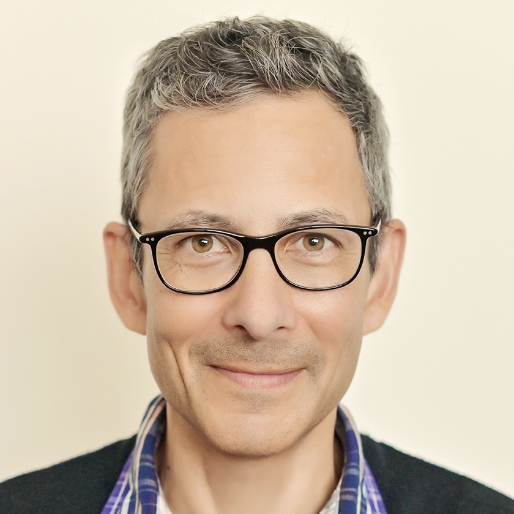

Our team consists of a junior researcher and many senior academics affiliated with public universities of New Zealand (University of Canterbury, Victoria University of Wellington, and The University of Auckland). We come from different backgrounds, we are politically unaffiliated and we do not represent or work for any community, religious, or political organisations. Our main motivation is to conduct good science and share it with the New Zealand public and scientific community.
Our current project is the first instance after establishing The Flourishing Lab, whose members are introduced as follows.
The Flourishing Lab Team Members
Principal Investigator - Postdoctoral Research Fellow
Hello/Salaam/Kia ora. I am Usman Afzali - a postdoctoral research fellow at University of Canterbury. I completed my PhD in psychology and am currently the principal investigator of the three-year Muslim Flourishing Project (since the beginning of 2023). Beside research, I also teach psychology at University of Canterbury. I migrated to New Zealand in 2011 and have been living in Christchurch since. In the past few years, I have published several articles with New Zealand Attitudes and Values Study (NZAVS) focusing on Muslim perception and attitudes toward Muslims in New Zealand.

Why I do this research?
I noted that NZAVS did not have many Muslim participants - which limits the inferences we can make about how Muslims perceive themselves in New Zealand, what makes Muslims resilient and flourish despite atrocities, and what factors contribute to meaning-making in Muslims. This is why the current project was conceived. Our aim is to collect longitudinal data from Muslims of New Zealand and publish our findings in peer-reviewed Open Science scientific journals1. These outputs will provide an objective account of Muslims’ social attitudes and values in New Zealand, and will allow Muslims to use these findings to advocate for their rights. In addition, such findings could be used to inform and influence government policy in relation to Muslim rights, and minority rights in general. Finally, our findings could also be used in other Muslim minority countries to spread awareness.
We are recruiting Muslim collaborators and Muslim research assistants from the community - which will not only help us work together with Muslim scholars, but also train a new cohort of Muslim researchers who might lead further Muslim-focused research, and help bring Muslims of New Zealand closer to science. This is what excites me, and this is why this project is so close to my heart.
More about Dr Afzali: Academic website, Instiution Homepage
The Project Co-leaders
Professor Joesph Bulbulia
Prof Bulbulia is a professor of psychology and the director of Centre for Applied Cross-cultural Research at Victoria University of Wellington, and one of four senior managers of the NZAVS. He developed the first NZAVS studies on anti- Muslim prejudice in 2015 (with postdoc Dr John Shaver) and works with government and Muslim communities to promote acceptance. He co-directs this project, mentors Dr Afzali, promotes international outreach, and co-authors publications.

More about Prof Bulbulia: Academic website, Instiution Homepage
Associate Professor Kumar Yogeeswaran
A/Prof Yogeeswaran is an associate professor of psychology at University of Canterbury. He has been an active member of the NZAVS advisory board since 2014, and published research using the NZAVS data, including several recent scientific articles relating to perception of the Muslim community. As a faculty member at the University of Canterbury, A/Prof Yogeeswaran will support and mentor the lead PI, Dr Afzali in the project.

More about A/Prof Yogeeswaran: Academic website, Instiution Homepage
Professor Chris Sibley
Prof Chris Sibley is a professor of psychology at the University of Auckland, and NZAVS founder and lead manager. Prof Sibley is among the world’s top researchers in longitudinal psychology. He manages the collected NZAVS Flourishing Study data at the basic level, and will co-author publications with the team.

More about Prof Sibley: Instiution Homepage
Barriester Aarif Rasheed
Barrister Aarif Abdul Rasheed is the head of the Muslim advocacy group, Just Community. He has been a close and valued NZAVS collaborator since 2016. Barrister Rasheed advises the team in this project and works with the Muslim community leadership and Research Assistants, particularly in Auckland and Wellington.

More about Barrister Rasheed: Homepage
Footnotes
Open-access articles are a published in a fashion that can be accessed online by any member of the public.↩︎